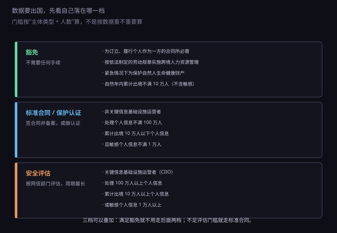
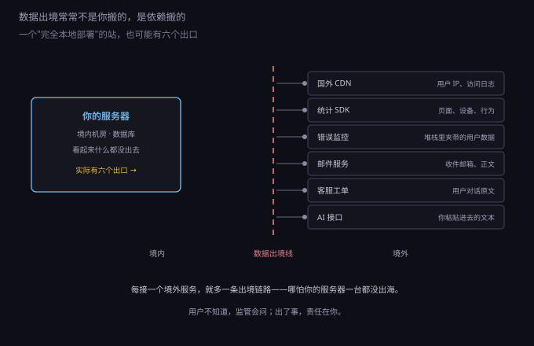
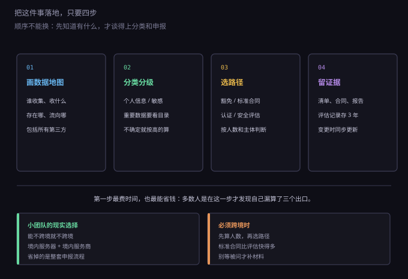

约 0.33 万字 · 3 张图 · 数据出门，比人出门麻烦得多
这一块最容易乱，因为有三组概念长得很像，但归三套不同的规则管。
个人信息：与已识别或可识别的自然人有关的各种信息。 手机号是，邮箱是，IP 地址在多数场景下也算，用户的笔记内容里提到别人也算。 归《个人信息保护法》管。
敏感个人信息：一旦泄露或被非法使用，容易导致人格尊严受侵害 或者人身财产安全受危害的那一类——生物识别、宗教信仰、特定身份、 医疗健康、金融账户、行踪轨迹，以及不满十四周岁未成年人的信息。 归个保法管，但要求更严（单独同意、影响评估）。
重要数据：这个词不在个保法里，在《数据安全法》里。 它指一旦被篡改、破坏、泄露，可能直接危害国家安全、经济运行、 社会稳定、公共健康和安全的数据。归数据安全法管， 判断依据是各行业的重要数据目录，不是你自己觉得重不重要。
重要数据最容易误判，因为它不由"你觉得重不重要"决定，而由目录决定。 汽车、地图测绘、气象、人口健康、金融这几个领域都有专门的重要数据目录； 没有被目录覆盖的，处理者可以申请主管部门认定。 一个做笔记应用的公司，用户写了些工作记录，这不构成重要数据； 但一个做地图标注的应用，哪怕用户只有几百个，也可能踩到测绘类重要数据。
为什么要分清？因为出境的门槛是按身份和人数算的， 不是按"数据重不重要"算的。十万条普通个人信息和一条重要数据， 走的是完全不同的程序。搞混了，要么白做一堆手续，要么漏掉真正该报的。
法律上的"出境"比直觉宽。判断标准不是"你有没有把硬盘寄出去"， 而是数据有没有被境外的机构访问或获取。
下面这些情形都算：
反过来，两种常见情形不算：数据在境内流转，只是经过境外服务器中转 （不落地、不被访问）；以及匿名化之后的数据—— 注意是匿名化，不是去标识化。去掉姓名但还留着手机号的，仍然是个人信息。
现在的规则可以概括成三档，从轻到重。

第一档，豁免。2024 年的《促进和规范数据跨境流动规定》 列了几种不需要走任何手续的情形：为订立、履行个人作为一方当事人的合同所必需； 按依法制定的劳动规章制度实施跨境人力资源管理所必需； 紧急情况下为保护自然人的生命健康和财产安全所必需； 以及非关键信息基础设施运营者、自然年内累计向境外提供不满十万人 普通个人信息的。
这一档的意义被低估了。它意味着：一家小公司用境外 SaaS 做人事管理、 给境外客户发订单确认邮件、或者一年只涉及几千个用户的跨境业务， 多数情况下不需要申报、不需要备案、不需要认证。
第二档，标准合同或保护认证。不满足豁免、又没到评估门槛的， 可以走这两条里的一条：与境外接收方签订国家网信部门制定的 标准合同并向省级网信部门备案， 或者通过个人信息保护认证。标准合同是这两条里更快、更常见的。
第三档，安全评估。四种情形必须申报： 向境外提供重要数据；关键信息基础设施运营者（CIIO）提供个人信息； 处理一百万人以上个人信息的处理者提供个人信息； 以及自上年一月一日起累计向境外提供十万人以上个人信息 或一万人以上敏感个人信息。
安全评估由省级网信部门受理、报国家网信部门评估，周期按月算， 而且要提交数据出境的风险自评估报告、与境外接收方的法律文件。 这是三档里成本最高的一档，也是很多公司选择"干脆不跨境"的原因。
还有一个变化值得知道：各自贸区可以制定自己的负面清单， 清单外的数据出境可以免于申报。做跨境业务的公司，注册地选在自贸区 有时能省掉一大截流程。
这一小节是整节最实用的部分。很多项目自称"数据全部在境内"， 实际上有六条链路每天在往外送东西。

国外 CDN。用户访问时，请求先到 CDN 节点， 节点会拿到用户 IP、UA、访问路径。如果 CDN 厂商是境外的， 这些日志就在境外。
统计 SDK。页面埋点、设备指纹、点击热图，默认发往厂商服务器。 多数境外统计服务的免费版会把数据存在境外。
错误监控。这一条最隐蔽：程序崩溃时上报的堆栈里， 常常夹带着当时的变量值——用户 ID、邮箱、甚至订单内容。 你以为只上报了一个报错，实际传了一整段上下文。
邮件服务。用境外 SMTP 发验证码和通知，收件人邮箱、 邮件正文、发送时间全部经手对方。正文里如果有订单号、 用户昵称，也是个人信息。
客服与工单系统。用户在对话框里说的话， 往往比注册时填的信息更敏感——地址、电话、身份证号都可能是他自己打进去的。
AI 接口。这一条是最近两年新增的：把用户的问题、 文档、截图粘进一个境外模型 API 做处理。粘进去的那一刻， 数据就出境了，而且往往连"匿名化"都没做。
这六条的共同点是：它们都不是你主动"搬"的，是依赖替你搬的。 所以在做数据地图时，只统计自己的数据库是不够的， 要把所有第三方服务列一遍，逐个问"它收什么、存在哪"。
合规这件事听起来吓人，落到操作上其实只有四步，顺序不能换。

第一步，画数据地图。列出所有会碰到个人信息的地方： 谁收集（注册、下单、留言、上传）、存在哪（数据库、对象存储、日志、备份）、 流向哪（第三方 SDK、邮件、客服、AI）。这张表不用多漂亮， 一张 Excel 就够，但它必须包含所有第三方。
第二步，分类分级。把每一行标成普通个人信息、 敏感个人信息、或者需要进一步确认是否为重要数据。 拿不准的时候按高的算——按敏感信息处理，最多是多做一步单独同意； 按普通信息处理而实际是敏感信息，那是违法。
第三步，选路径。看着上一节的三档，对号入座： 能不能豁免？不能豁免但人数不大，走标准合同；到了评估门槛，申报评估。 注意人数是按自然年累计算的，不是按当前存量算的。
如果走标准合同，要签的内容国家已经定好了，一共九项必备条款， 核心是四件事：境外接收方的处理目的和方式、保存地点和期限、 再向第三方提供的约束、以及用户行使权利的配合义务。 合同签完要向省级网信部门备案，改了条款要重新备案。 这一步的意义在于：它把"数据给出去之后会怎样"变成了书面承诺， 而不是一句口头保证。
第四步，留证据。清单、标准合同、备案回执、 影响评估报告、与境外接收方的数据处理协议，都要存档。 个人信息保护影响评估记录要求保存至少三年。 这不是为了应付检查，是为了万一出事时能证明"我当时判断过、也做了措施"。
一、以为"服务器在境内"就等于合规。 这是最常见的错觉。前面六个出口一列，多数站至少中三个。
二、把"去标识化"当成"匿名化"。 去掉姓名、保留手机号，仍然能定位到具体的人，属于去标识化， 依然是个人信息。真正的匿名化要求无法复原，实践中很难做到， 所以别轻易说"我们数据已经匿名了"。
三、以为人数门槛按累计总量算。 规则写的是"自上年一月一日起累计向境外提供"，是流量不是存量。 一个用户每天同步一次，一年就是三百多条，十万条很容易攒到。
四、忘了境外接收方也是处理者。 把数据给出去之后，对方怎么用、存多久、会不会再转给第三方， 都要在合同里约定。标准合同之所以叫"标准"， 就是这些条款已经替你写好了，不能随便改。
五、以为小公司不会被管。 现实中的触发点往往不是检查，而是应用商店审核、 客户尽调、投资方尽职调查。一份说不清数据流向的问卷， 会直接卡住上线或融资。
六、低估了违规的代价。 违反数据出境规定，可能被责令改正、警告、没收违法所得； 情节严重的，罚款可到一千万元，并责令暂停相关业务、停业整顿。 个人信息这边的上限更高：五千万元或上一年度营业额百分之五。 对个人项目来说，真正会先到来的往往不是罚款，是应用下架和合作方终止。
讲完规则，落到实处。对一个人或几个人的团队，我建议的顺序是这样。
第一，能不跨境就不跨境。 服务器放境内，统计用境内服务，邮件用境内服务商，客服用自建表单。 这一套做完，绝大多数出境问题直接消失——省下的不是一份材料， 是整套申报流程和后续的持续义务。
第二，必须跨境时，先看能不能落进豁免。 合同履行所必需、跨境人力资源管理、人数不满十万， 这三种覆盖了大部分小规模场景。落进去了，就只需要在隐私政策里 写清"数据会传到境外、接收方是谁"，并把这件事告诉用户。
第三，超过豁免范围，优先标准合同。 它比安全评估快得多，模板是现成的，备案在省级网信部门。 唯一要注意的是：签了就不能随便改条款，改动要重新备案。
第四，把"数据流向"写进隐私政策。 8.6.4 说过政策要写"给谁"，跨境场景下这一条要写得更具体： 传到哪里、经过谁、依据哪条路径。写清楚了，既是履行告知义务， 也是给自己留一份书面判断。